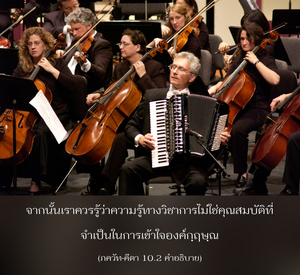
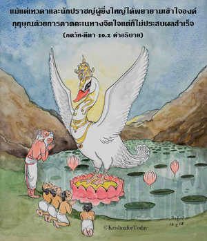
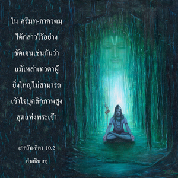

ทั้งเทวดาและนักปราชญ์ผู้ยิ่งใหญ่จำนวนมากไม่รู้แหล่งกำเนิดหรือความมั่งคั่งของข้า แต่ข้าคือแหล่งกำเนิดของเหล่าเทวดาและนักปราชญ์ด้วยประการทั้งปวง





ดังที่ได้กล่าวไว้ใน พฺรหฺม-สํหิตา ว่า ศฺรีกฺฤษฺณ คือ องค์ภควานฺ ไม่มีผู้ใดยิ่งใหญ่ไปกว่าพระองค์ ทรงเป็นแหล่งกำเนิดของแหล่งกำเนิดทั้งปวง ณ ที่นี้พระองค์ตรัสไว้เช่นกันว่า ทรงเป็นแหล่งกำเนิดของเหล่าเทวดา และนักปราชญ์ทั้งหลาย แม้แต่เทวดา และนักปราชญ์ผู้ยิ่งใหญ่ก็ไม่สามารถเข้าใจองค์กฺฤษฺณได้ เมื่อพวกนี้ไม่สามารถเข้าใจพระนาม หรือบุคลิกภาพขององค์กฺฤษฺณ แล้วผู้ที่สมมติว่าเป็นนักวิชาการแห่งโลกใบเล็กๆ นี้จะเป็นเช่นไร ไม่มีผู้ใดสามารถเข้าใจว่าทำไมองค์ภควานฺจึงทรงเสด็จมายังโลกเหมือนกับปุถุชนคนธรรมดา และปฏิบัติกิจกรรมที่ไม่ธรรมดาอันน่าอัศจรรย์เช่นนี้ จากนั้นเราควรรู้ว่าความรู้ทางวิชาการ ไม่ใช่คุณสมบัติที่จำเป็นในการเข้าใจองค์กฺฤษฺณ แม้แต่เทวดา และนักปราชญ์ผู้ยิ่งใหญ่ได้พยายามเข้าใจองค์กฺฤษฺณด้วยการคาดคะเนทางจิตใจ แต่ก็ไม่ประสบผลสำเร็จ ใน ศฺรีมทฺ-ภาควตมฺ ได้กล่าวไว้อย่างชัดเจนเช่นกันว่าแม้เหล่าเทวดาผู้ยิ่งใหญ่ไม่สามารถเข้าใจบุคลิกภาพสูงสุดแห่งพระเจ้า พวกเขาสามารถคาดคะเนจนถึงขีดจำกัดของประสาทสัมผัสอันไม่สมบูรณ์ จนมาถึงจุดสรุปที่ตรงกันข้าม คือ ลัทธิไร้รูปลักษณ์เกี่ยวกับบางสิ่งบางอย่างที่ไม่ปรากฏจากคุณลักษณะทั้งสามของธรรมชาติวัตถุ หรืออาจจินตนาการบางสิ่งบางอย่างด้วยการคาดคะเนทางจิตใจ แต่เป็นไปไม่ได้ที่จะเข้าใจองค์กฺฤษฺณ ด้วยการคาดคะเนที่โง่เขลาเช่นนี้
ตรงนี้องค์ภควานฺตรัสโดยอ้อมว่าหากผู้ใดปรารถนาจะรู้สัจธรรมที่สมบูรณ์ “บัดนี้ข้าปรากฏในฐานะบุคลิกภาพสูงสุดแห่งพระเจ้า ข้าคือองค์ภควานฺ” เราควรรู้เช่นนี้ถึงแม้ว่าเราจะไม่สามารถเข้าใจองค์ภควานฺผู้ที่ไม่สามารถมองเห็นได้และยังทรงประทับอยู่ด้วย และพระองค์ก็ยังทรงปรากฎได้อีก เราสามารถเข้าใจองค์กฺฤษฺณได้อย่างแท้จริงว่าเป็นอมตะ เปี่ยมไปด้วยความปลื้มปิติสุข และความรู้ จากการศึกษาคำดำรัสของพระองค์ใน ภควัท-คีตา และ ศฺรีมทฺ-ภาควตมฺ ทัศนคติเกี่ยวกับองค์ภควานฺที่เหมือนกับพลังอำนาจที่สามารถควบคุมบางอย่าง หรือว่าเป็น พฺรหฺมนฺ อันไร้รูปลักษณ์ บุคคลผู้อยู่ภายใต้พลังอำนาจเบื้องต่ำสามารถบรรลุถึง แต่ผู้ที่อยู่ในสถานภาพทิพย์เท่านั้นจึงสามารถสำเหนียกถึงบุคลิกภาพสูงสุดแห่งพระเจ้าได้
เพราะว่าคนส่วนใหญ่ไม่สามารถเข้าใจองค์กฺฤษฺณในสถานภาพอันแท้จริง ด้วยพระเมตตาธิคุณอันหาที่สุดมิได้ขององค์ภควานฺทรงเสด็จลงมาเพื่ออนุเคราะห์ต่อนักคาดคะเนเหล่านี้ ถึงกระนั้น แม้จะมีกิจกรรมอันไม่ธรรมดาขององค์ภควานฺเนื่องจากมลทินแห่งพลังงานวัตถุนักคาดคะเนเหล่านี้ยังคิดว่า พฺรหฺมนฺ อันไร้รูปลักษณ์ คือ องค์ภควานฺ เหล่าสาวกผู้ศิโรราบต่อองค์ภควานฺโดยดุษฎีเท่านั้น จึงสามารถเข้าใจได้ด้วยพระกรุณาธิคุณของบุคลิกภาพสูงสุดว่าพระองค์ คือ องค์กฺฤษฺณ เหล่าสาวกขององค์ภควานฺไม่ไปยุ่งเกี่ยวกับแนวคิด พฺรหฺมนฺ อันไร้รูปลักษณ์ ความศรัทธา และการอุทิศตนเสียสละจะนำพวกท่านให้มาศิโรราบต่อพระองค์โดยทันที และด้วยพระเมตตาธิคุณอันหาที่สุดมิได้ขององค์กฺฤษฺณทำให้สามารถเข้าใจองค์กฺฤษฺณ นอกนั้นไม่มีผู้ใดเข้าใจพระองค์ได้ ดังนั้น แม้นักปราชญ์ผู้ยิ่งใหญ่เห็นด้วยว่า อาตฺมา คืออะไร องค์ภควานฺคืออะไร และพระองค์คือผู้ที่เราต้องบูชา